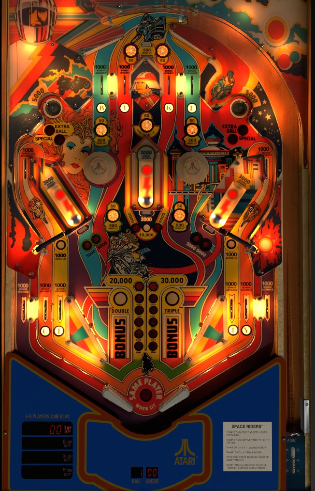

Completing BIKE at the top lanes or CITY at the in lanes awards a bonus multiplier. Star rollovers increase the value of the drop targets in front of the captive balls. Hit a captive ball to unlight it. The saucers in the top corners of the game reset the drop targets, and award extra ball if all 3 drop targets are down or Special if all 3 drop targets have been hit. The left and right drop targets also light the nearby spinners for 1,000 per spin, but this shot is at a low enough angle as to be quite awkward to hit squarely.
The below picture of Space Riders' playfield was taken from the VPX recreation by Thalamus.

The four top lanes spell BIKE, and the four in lanes spell CITY. All of these lanes score 1,000 points and a bonus advance. Make a lit lane to unlight it. Flipper lane change is not available. Unlighting either BIKE or CITY awards 2x bonus. Unlighting both awards 3x bonus. Status of the BIKE and CITY lights is preserved from ball to ball, unless you complete either word, in which case that word will be fully reset for the next ball.
Star rollovers score 50 points, or 500 when lit. All 7 star rollovers are lit at the start of each ball and unlight when pressed.
The drop targets in front of the three captive balls begin with a value of 2,000 points. Unlighting the star rollovers just above and below the left pop bumper increases the value of the left drop target to 3,000, then 5,000. The star rollovers just above and below the right pop bumper do the same to the right drop target. The two star rollovers at the top of the game and the star rollover just above the the center captive ball structure increase the value of the center drop target to 3,000, then 5,000, then 10,000. Making either saucer in the top corners of the game resets all 3 drop targets, allowing their value to be recollected.
When a drop target is down, the captive ball behind it can be hit. A full shot to a captive ball will hit the target at the end of its lane and score 3,000 points and 1 bonus advance. If that captive ball lane is lit, hitting the captive ball target will unlight it as well.
The upper left and right saucers score 5,000 points and reset the drop targets. If all 3 drop targets are down at the same time, one of the top saucers will be lit for extra ball, alternating based on slingshot hits. If all 3 captive balls have been unlit, one of the top saucers will be lit for Special instead, also alternating based on slingshot hits. (On hard settings, you need to have all 3 drop targets down and all 3 captive balls unlit at the same time to upgrade the extra ball into a Special.) The placement of the pop bumpers makes it very difficult to shoot the saucers directly.
Extra ball can be set to score 25,000 points. Special can be set to score a free game, an extra ball, 50,000 points, or 100,000 points.
Whenever the left or right drop target are down, the left or right spinners respectively will be lit for 1,000 per spin instead of 100. This is tempting value, but the shots are deceptively difficult because of how low on the flipper they are. The rollover switches behind the spinners score 1,000 points and a bonus advance.
Whenever the center drop target is down, one of the two pop bumpers will be lit for 1,000 points instead of 100, alternating based on slingshot hits.
Space Riders has a conventional in/out lane setup, but with 2 in lanes on each side instead of 1. All in/out lanes score 1,000 points and 1 bonus advance. The 4 in lanes award the letters in CITY, which advances the bonus multiplier if they are all unlit. There is no kickback or center post.
Bonus is advanced by any top lane, any in/out lane, the rollover switches behind the spinners, and a full shot to any captive ball. Bonus is doubled by completing BIKE or CITY, and bonus is tripled by completing both BIKE and CITY in the same ball. Max bonus is 3x 30,000 = 90,000 points. There is no way to collect any part of the bonus mid-ball or carry any part of the bonus from one ball to the next. Collected BIKE and CITY letters are preserved from ball to ball, unless you complete either word, in which case it is fully reset for the next ball.